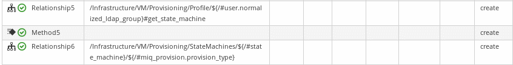
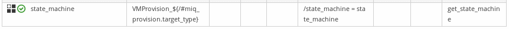
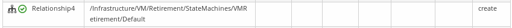
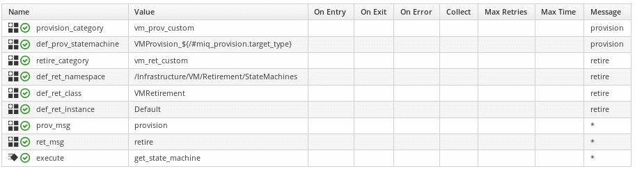
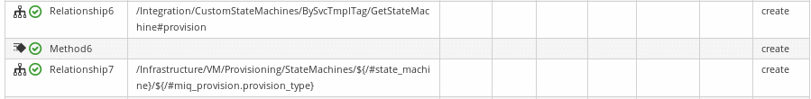
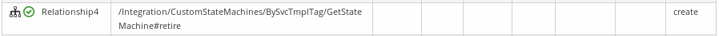

Within CloudForms,VM StateMachines are defined by default following the associated request event.
This may be an issue in some cases :
Within complex projects, several provisioning/retirement context with different workflows, constraints or infrastructure tools may exist requiring different provisioning/retirement steps on a per item basis.
A manually provisioned VM will not have to use a service ordered VM StateMachine as it have not to (or can not) provide specific parameters or comply to this service placement constraints..
As several parallel implementations, use cases, developments or tests are enabled, each context requires it’s own StateMachines that won’t interfere with others concurring enabled domains/namespaces at the same time.
This component let you define specific StateMachines for both provisioning and retirement that will not interfere, overload or be overloaded due to their domain order of priority. In the datastore
Potentially quite any switching criteria available in associated requests may be chosen and implemented.
This precise implementation case is based on catalog item service template tagging, that should cover most generic use cases by default. It is implemented in our team lab and provides the following advantages :
By tagging his case study catalog items with unique tags, any of the team member can test quite whatever he wants without any impact risks for others, including regular services deployed at higher level (i.e. OpenShift services).
This is totally transparent to regular services. If not tagged for dynamic state machine election, they will be mapped back to default configuration with respect to domain hierarchy.
All tagged case studies can reside at same time in a single enabled domains, per user in our case. That drastically reduces the number of domains, improve overall management and let’s users have all their cases available at the same time.
Thereafter come several sections :
Using it
Integration context background
Integration details
From AutomationBricks
You will need the following from AutomationBricks seen as first instances from your datastore hierarchy :
/AutomationBricks/Infrastructure/VM/Lifecycle/Provisioning
/AutomationBricks/Infrastructure/VM/Lifecycle/Retirement
You will also need /AutomationBricks/Integration/CustomStateMachines/BySvcTmplTag and it’s instance and method (GetStateMachine and get_state_machine)
Create your and tags
You have to create 2 tag categories : vm_prov_custom and vm_ret_custom
They will contain StateMachine class names tags.
Within those categories, create tags in snake case containing the StateMachine class name CamelCase equivalent. In example, for a tag named dyn_by_tag the target StateMachine class will be DynByTag
Create your custom state machines
Within your context copy a valid provisioning and retirement
StateMachines in a domain of your choice within your datastore.
You
will need to copy :
the class
the provisioning instance
the update_provision_status or update_retirement_status method.
Once done, rename the class you just copied in your datastore with the CamelName matching your snake_case name.
Eventually, edit the update_*_status method so they log the StateMachine they are in as they are called.
You may find an example of all this with the sample DynByTag custom state machine used within AutomationBricks. Obviously do not use it (nor the name). As you will very probably have a different infrastructure and underlying automation it will simply not work. It is only included as a sample.
Create or choose a service catalog item and tag it
Create a use a test catalog item service of your choice. Provision or Retire it (if a vm ever exist from this template). If you look at evm.log for get_state_machine output you should see it goes through default provisioning or retirement.
Tag it with any or both of your vm_*_custom tags. Provision or Retire it (if a vm ever exist from this template). Look at evm.log. get_state_machine and update_*_status should tell you if you go through your custom state machine.
As a request event is sent, the initial entry point used to select
the appropriate StateMachine is the class
/Infrastructure/VM/Lifecycle which schema defines an empty list of
states, mainly relationships and methods.
This class contains
two instances that are of interest in our case : Provisioning
and Retirement . The third one, Migrate, do not enter our current
perimeter but could be integrated as well if required.
Provisioning
Here are the states used in Lifecycle/Provisioning instance :

Illustration 1: Default
Provisioning
instance
At
state RelationShip5 it calls an instance named from the user group
name within /Infrastructure/VM/Provisioning/Profile class. By
default, the only group that has an instance is
EvmGroup-super_administrator with no specificities from the class
schema, so in most cases it’s the .missing instance that will be
called, identical as well to the class schema by default.
In
those instances the only step that through the get_state_machine
messasge is the last one :

Illustration 2:
state_machine state in default Profile instances
We then have the choice to intercept the default provisioning
StateMachine election at two different stages, at the
Lifecycle/Provisioning or at the Profile/.missing stage.
In both
case we would trigger a dedicated instance so to do the job.
We
choosed to go for the Lifecycle level for the following reasons :
Intercepting at Profile level would mean that we intend to use two selection criterias, the user group and the service template tag, that is not our case.
Integrating at Profile level would imply changing the Class schema, as rather than a parameter we require a relationship entry point. That would have an un-necessary structural impact that we prefered to avoid as it was possible.
Retirement StateMachine setting/jump is directly done from Lifecycle level. We considered that implemeting our case for same core functionality (StateMachine election) at two different and un-related logical levels (Lifecycle + Profile) would not be a good practice as it was not absolutely required.
We currently did not meet cases where an implementation of both filters (user group + dynamic request level parameter) would be required. In case it would, the instance called at the Lifecycle level may be simply copied in a new relationship within the Profile class schema and the state_machine parameter commended or removed. Our modified Lifecycle/Provisioning instance could then be removed so to use the default one again.
Retirement
Here is the state used in Lifecycle/Retirement default instance :

Illustration
1: Default Retirement instance
From that state we directly jump to retirement StateMachine. Therefore it’s here that we will integrate our modifications.
High level considerations
The following was considered :
We should have one single instance and method pair for both provisioning and retirement. The switch will be done through message sending.
In this case we will not use the .missing shortcut to method as other use cases could imply schema values modifications
No method hard coding : anything related to context (such as default namespaces and class) must come from the instance.
Within the StateMachine election, any non correct dynamic StateMachine election should imply switching back to default StateMachine.
GetStateMachine instance
This case have been implemented in the namespace : /AutomationBricks/Integration/CustomStateMachines
Tag based election class is : BySvcTmplTag
It currently has a single instance : GetStateMachine

Illustration
2: GetStateMachine instance schema
Fields are :
provision_category : Tag category containing target provision StateMachine instance name. See later for tag format.
def_prov_statemachine : Default provisioning statemachine to initialize in $evm.root[‘state_machine’] in case we need to go back to it. In this instance, initialized at ManageIQ domain default value
retire_category : Tag category containing target retirement StateMachine instance name. See later for tag format.
def_ret_namespace : Default retirement StateMachine namespace – also used to create the dynamic retirement StateMachine path. [*]
def_ret_class : Default retirement StateMachine class [*]
def_ret_instance : Default retirement StateMachine instance - also used to create the dynamic retirement StateMachine path. [*]
prov_msg : message this instance should receive to trigger provision StateMachine election in it’s method. [*]
ret_msg : message this instance should receive to trigger provision StateMachine election in it’s method. [*]
execute : method to execute
[*] = could be useful to redefine but primarily created to avoid hard-coding in method.
Messages are :
provision
retire
Those messages are used within the
execute method to switch between provisioning and retirement
StateMachine.
They are also used in the instance to activate the
configuration of some parameters. This helps to check which are the
mandatory instance initialization from instance. As well, as a
provisioning parameter has nothing to do in the retirement code, it’s
better to have it undefined (so nil if checked) within that code.
Calling GetStateMachine instance
As seen from context background, we will have two entry points
For provisioning, within /AutomationBricks/Infrastructure/VM/Lifecycle/Provisioning we will call it with a provision message at state Relationship6 :

For retirement, within /AutomationBricks/Infrastructure/VM/Lifecycle/Retirement we will call it with a retire message at state Relationship4 :

Tag Format and target StateMachine names
Tags used for templates should give the name of the target state machine. Given restrictions in tags syntax, those tag names are in snake_case whereas the resulting target StateMachine class name will be CamelCase.
In example, for a tag named dyn_by_tag the target class will be DynByTag
The target provisioning StateMachine will be :
/Infrastructure/VM/Provisioning/StateMachines/DynByTag/template
The
target retirement StateMachine will be :
/Infrastructure/VM/Retirement/StateMachines/DynByTag/Default
get_state_machine method
It’s objectives are :
Identify valid tag categories and messages from instance
Get matching tags on template for current message
If anything is compliant ot custom settings, set custom StateMachine class name (if provisioning) or instanciate StateMachine instance(if retiring).
If any uncompliance with custom setting, roll back to default StateMachine election.
Method is well commented (I guess) so should be self
explenatory.
A global @debug variable is defined as true at it’s
very begining that could be set to false when you won’t need any
verbosity anymore.